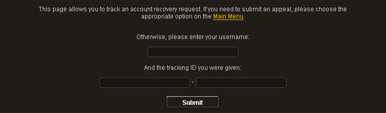

")
Password Support
Using the Password Recovery system | How do I change my password? | How do I set my recovery questions? | Does Jagex block my password?
What is a good password?
What is a good password?
| Click here to log into the Password Recovery system |
| Click here to track a recovery request |
Using the Password Recovery system

If a player discloses their password for any reason, they leave it open for others to use. If you are having problems accessing your account, it could be that somebody else knows your password and has subsequently changed it. If this occurs, or you simply cannot remember your password, you can try to retrieve your lost account by submitting a password recovery form. This form can be found by going to the RuneScape homepage and clicking on 'Account'. This will take you to Account Management; click on 'Recover Password' at the bottom of the page.
On this page you will need to enter your username and then press 'Submit'.
If you have registered an email address for your account, you will be asked to provide it. If we can confirm that the provided email address has been registered and verified, we will then send a security code to the provided email address. You should copy the code from the email and enter it into the appropriate box on the account recovery form. If you have not registered an email address for your account, or if you have forgotten which address you registered, simply leave the email box blank and carry on with the account recovery process.
The Account Recovery form will then appear. This needs to be completed to the best of your ability. It may be the case that not all the questions are relevant to your account, but those that are should be filled in clearly and correctly. The more relevant the information we receive, the better the chance we have of determining the true owner of the account. The information you will need to provide is:
- Your recovery answers
- Previous passwords
There is also a field for providing extra information to prove your ownership of the account. Usually, you can find your transaction ID and other billing numbers in the notification you will have received confirming your payment. For this reason, it is very important that you do not throw them away or misplace them.
If you do not know or cannot remember all your account information, please try to provide the earliest information you have for each of the categories requested. This will ensure that your request is dealt with as quickly as possible. We can only issue a new password to an account once we are satisfied that it will be returned to the correct owner.
Try to fill in as much information as clearly as possible, to increase the likelihood that your request will be successful. You will also need to supply a new password; we recommend you read this section to ensure that your new password is suitable.
Query Tracking

In order to track a player’s password request, they are given a unique ‘Tracker ID’. To follow the progress of the query, go to the RuneScape homepage and click on 'Account'. This will take you to Account Management; click on 'Track Recovery' at the bottom of the page.
This will bring up a page asking you to enter the Tracker ID.
Type in your tracker ID and you will be told what stage your password recovery request is at. Please note that some password recovery requests may take longer to process than others.
How do I change my password?
To change your password, please go to the RuneScape homepage and click on 'Account'. This will take you to Account Management; click on 'Change Password' halfway down the page, or click here.
You will then need to log-in, entering your username and password.
A page will then load which will allow you to change your password by confirming your current password and then entering the new one twice, to make sure there are no spelling mistakes. We recommend that you read this to ensure that your new password is suitable.
Once you have entered all the necessary information, click the 'Submit Request' button at the bottom of the page and your password will then be changed.
Please remember that your password is only as secure as your computer and as secret as you keep it.
How do I set my recovery questions?
To change your recovery answers, please go to the RuneScape homepage and click on 'Account'. This will take you to Account Management; click on 'Set Recovery Questions' towards the bottom of the page, or click here.
You will then need to log in, entering your username and password.
A page will then load which will allow you to set new recovery questions by confirming your current password and then entering the new questions and answers. Remember that your recovery questions should have answers which are difficult to guess that will not change often and you will not forget.
Once you have entered all the necessary information, click the 'Submit Questions & Answers' button at the bottom of the page and your new recovery questions will then be changed.
Please remember that your account is only as secure as your computer and as secret as you keep your password.
Does Jagex block my password?
Yes, Jagex does block your password, but it is still incredibly dangerous to try to say it. There is the risk of mis-typing it, which may result in you accidentally revealing it!
Even with this block in place, some unscrupulous players may ask for your password. If you see someone saying this, please report them for 'Password scamming' by clicking on the Report Abuse button. The Report Abuse button can be found in the bottom right hand corner of the game window.
If your password is a common word, or one you might use in chat normally, please change it. We will automatically block any sentence in which your password appears, so that it cannot be figured out from the context. For example, if your password was 'sandwiches' and you wanted to say it in-game in a sentence and only the password appeared blocked, then people might be able to work out which word you were trying to say, and thus gain your password.
What is a good password?
A good password is one that is not easy to guess or work out, is easy for you to remember, is at least eight letters long and contains a mix of letters and numbers.
- DO NOT pick any word or number which has a connection to you, so don't pick your house number or street name, for example.
- DO NOT just use a number at the end of a word, such as HVYDG8076
- DO NOT use common number and letter substitutions e.g. 4 as the word 'for', 1 as 'L' or 'I', 5 as 'S'
- DO NOT use repeating characters 'bbbbbbbbbb' or series of characters such as 'kbkbkbkbkbkb'.
- DO NOT use your name, account name or name of an item either forwards, backwards or divided up.
- DO NOT use a series of characters off any keyboard such as 'qwerty', 'lkjhgf' or 'qazwsxedc', as these are very common and hijackers will look for these.
The only limitations placed on you by RuneScape are:
- You can only have passwords up to 20 characters long.
- You cannot use symbols such as '!' and '%'.
Passwords are not case sensitive, so 'HVYDG' is the same as 'hvydg' or 'HvYdG'.
One way to make a password is to think up a collection of random alphabetical characters which do not exist as a word in any language. Then you should come up with a couple of random numbers which you can add to the word throughout. For example:
- Word: GJWXREJUVGF
- Number 1: 102
- Number 2: 13
- Combine them = G102JW13REJUVGF
This would be a very good password if it was not on this webpage. DO NOT use this password as any hijacker will be able to find this password and try it to open your account. Make your own up instead.
It is always worth having a notebook in which you can write down a copy of your password each time you change it so you can make sure you won't repeat any, and in case your password is hard to learn at first. You should of course keep this in a very safe place.
As long as your password stays safe then there is no need to change your password often, as this just means you are more likely to reuse a password or forget the new one, but it is advisable to change it every 6 months or so.
It is especially important that if your account has been hijacked that you DO NOT use a password that you've previously used on your account.

More articles in
Customer Support
|
|
|
Further Help
If this article does not help you, you may find the following sections of the RuneScape site helpful:
|
|